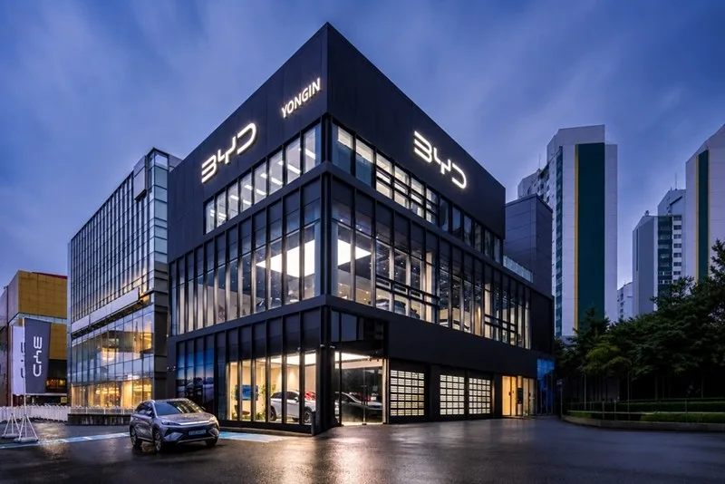
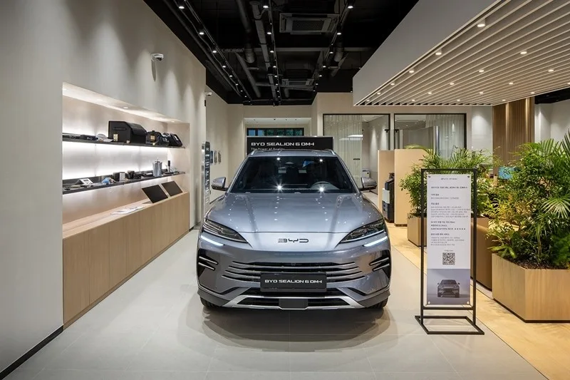
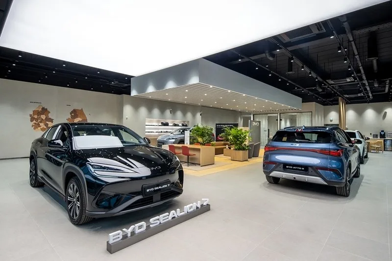

▲ 경기 용인시 기흥구에 문을 연 'BYD Auto 용인 전시장'. 3개 층 규모의 통유리 외관으로 지어졌다
1. 경기 남부에 문을 연 38번째 전시장
BYD코리아가 2026년 9월 4일 경기도 용인시 기흥구 중부대로 262(수원-신갈 톨게이트 인근)에 'BYD Auto 용인 전시장'을 공식 오픈했다. 국내 승용 부문 전시장으로는 38번째다. 전시장은 전체면적 989.44㎡(약 300평) 규모로 지어졌으며, 최대 6대의 차량을 동시에 전시할 수 있다. 통유리 외관에 'BYD YONGIN' 사인을 내건 3개 층 구조로, 1층에는 시승·구매 상담 공간을, 상층부에는 전시 공간을 배치했다.
BYD코리아는 이달 중순 같은 자리에 서비스센터를 추가로 열어, 판매(Sales)·부품(Spare Parts)·정비(Service)를 한 곳에서 해결하는 '3S 복합거점' 형태로 운영을 확대할 계획이라고 밝혔다.

▲ 전시장 내부 통로에 전시된 BYD 씰라이온6 DM-i. 목재 톤 마감재와 조명으로 프리미엄 매장 분위기를 냈다 ⓒ BYD코리아
2. 왜 용인인가 — 110만 인구의 경기 남부 거점
BYD코리아는 용인을 '경기 남부를 대표하는 거점 도시'로 규정하고 이번 전시장 입지를 선정했다고 설명했다. 용인특례시는 인구 약 110만 명 규모로, 수원·성남·화성 등 대규모 주거 밀집 지역과 도로·철도망으로 촘촘히 연결돼 있다. 특히 30~40대 가족 단위 거주 비율이 높고 친환경차 보급률도 상대적으로 높은 지역으로 꼽힌다. 전시장이 들어선 수원-신갈 톨게이트 인근은 수입차 전시장이 몰려 있는 상권이어서, BYD로서는 경쟁 브랜드 고객층과의 접점을 자연스럽게 늘릴 수 있는 입지이기도 하다.
📍 3S 복합거점이란
3S는 Sales(판매)·Spare Parts(부품)·Service(정비)의 앞글자를 딴 개념으로, 한 시설 안에서 차량 구매부터 사후 정비까지 원스톱으로 처리할 수 있는 복합 거점을 뜻한다. 수입차 브랜드가 신규 진출 지역에서 고객 편의성과 서비스 신뢰도를 동시에 확보하기 위해 흔히 채택하는 전시장 운영 방식이다.
3. 1년 만에 2배 넘게 늘어난 전시장 네트워크
BYD코리아의 전시장 확장 속도는 이례적으로 빠르다. 2025년 1월 승용 브랜드 출범 당시 전국 15개 전시장과 11개 서비스센터로 영업을 시작한 이후, 2026년 4월 기준 전시장 32곳·서비스센터 17곳으로 늘었고, 이번 용인점을 포함해 승용 전시장은 38곳까지 확대됐다. 8월에는 '스타필드마켓 월계', 9월 초에는 '평택 전시장'을 잇달아 열며 수도권을 중심으로 한 촘촘한 네트워크 구축에 속도를 내고 있다.
| 시점 | 전시장 | 서비스센터 |
|---|---|---|
| 2025년 1월(승용 브랜드 출범) | 15개 | 11개 |
| 2026년 4월 | 32개 | 17개 |
| 2026년 9월(용인점 포함) | 38개 | 순차 확대 중 |

▲ 전시장 상층부에 마련된 넓은 전시 공간. 씰라이온7과 아토3 등 주요 판매 모델이 함께 전시돼 있다 ⓒ BYD코리아
4. 판매 성장세가 뒷받침한 확장 전략
이 같은 공격적인 네트워크 확충은 국내 판매 실적의 뒷받침 없이는 설명하기 어렵다. BYD코리아는 지난해 4월 첫 고객 인도 이후 11개월 만에 누적 판매 1만 대를 돌파하며, 국내 진출 수입차 브랜드 중 최단 기간 기록을 세웠다. 2026년 6월에는 국내 시장에서 4,652대를 판매해, 전년 동월(220대) 대비 2,000% 넘게 급증한 수치를 기록하기도 했다. 씰라이온7·아토3·돌핀 등 준중형 SUV·해치백 라인업이 판매를 이끌고 있는 것으로 알려졌다.

▲ BYD코리아의 판매를 이끄는 준중형 SUV 씰라이온7. 용인 전시장에도 주력 모델로 전시됐다 ⓒ BYD코리아
전시장을 늘리는 만큼 서비스 역량 확보도 병행되고 있다. 용인 전시장 개장 당일에는 방문객 전원에게 리유저블백을, 시승 고객에게는 장우산을, 실제 구매 고객에게는 기내용 캐리어를 증정하는 이벤트도 함께 진행됐다. 전시장 위치와 상담 예약은 BYD코리아 공식 홈페이지에서 확인할 수 있다. 바로가기
✅ BYD Auto 용인 전시장, 이것만은 확인하세요
· 2026년 9월 4일 경기 용인시 기흥구에 오픈, 국내 승용 전시장 38번째
· 면적 989.44㎡(약 300평), 최대 6대 전시 가능
· 9월 중순 서비스센터 추가 개소로 3S 복합거점 완성 예정
· 용인은 인구 110만 명, 수원·성남·화성과 인접한 경기 남부 거점 도시
· 지난해 4월 첫 인도 후 11개월 만에 누적 판매 1만 대 돌파, 6월엔 전년比 2,000%↑ 판매
5. 정리
BYD코리아의 용인 전시장 오픈은 단순한 매장 하나가 느는 것을 넘어, 경기 남부 110만 인구 상권을 정조준한 전략적 확장으로 읽힌다. 1년여 만에 전시장을 15곳에서 38곳으로 2배 넘게 늘린 속도전의 배경에는 누적 판매 1만 대 돌파, 전년 대비 2,000% 이상 늘어난 판매 실적이 자리한다. 서비스센터까지 갖춘 3S 복합거점으로 완성될 용인점이 경기 남부 공략의 새 교두보가 될 수 있을지 주목된다.